워드프로세서-2급(폐지) (2002-11-24 기출문제)
1과목: 워드프로세서 용어 및 기능
1. 다음의 기억장치 중에서 전원이 차단되면 기록내용이 사라지는 것은?
- ROM(Read Only Memory)
- RAM(Random Access Memory)
- 플로피디스크(Floppy Disk)
- 하드디스크(Hard Disk)
(정답률: 69%)

2. 다음 중 프린터의 인쇄 품질을 나타내는 해상도의 단위는?
- CPS(Character Per Second)
- DPI(Dot Per Inch)
- BPI(Byte Per Inch)
- PPM(Page Per Minute)
(정답률: 71%)
3. 다음 중 화면에 문자나 도형 등을 표시하는 방식으로 그래픽 표시 방식의 설명이 옳지 않은 것은?
- 그래픽 표시 방식은 인쇄하기 전에는 그 내용을 화면에서 확인할 수 없다.
- 문자나 도형 등을 픽셀이라는 점의 집합으로 표시한다.
- 글씨체가 다양하다.
- 한 화면에는 640×480, 800×600, 1024×768 등의 픽셀을 갖는다.
(정답률: 61%)
4. 다음 보기에서 사용한 문자의 속성으로 옳은 것은?
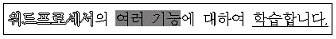
- 외곽선, 음영, 밑줄
- 외곽선, 역상, 밑줄
- 강조, 음영, 밑줄
- 강조, 역상, 밑줄
(정답률: 73%)
5. 현재 입력 중인 문단의 끝을 알리고 줄을 바꾸거나, 행을 삽입할 때 사용되는 키는?
- [Enter]
- [Home]
- [End]
- [Page up]
(정답률: 84%)
6. 다음 중 영역지정과 관계가 없는 기능은?
- 문장 복사
- 문단 정렬
- 다단
- 문장 이동
(정답률: 68%)
7. 다음 중 워드프로세서의 인쇄 기능에 대한 설명으로 옳지 않은 것은?
- 미리보기를 이용하면 용지의 여백이나 전체 윤곽을 확인할 수 있다.
- 작업한 문서를 맨 뒤쪽부터 역순으로 인쇄할 수 있다.
- 높은 해상도로 출력하면 출력시간이 짧고 토너의 소모를 줄일 수 있다.
- 스풀(Spool) 기능을 설정하면 인쇄 중 다른 작업을 할 수 있다.
(정답률: 67%)
8. 워드프로세서로 문서를 작성하거나 편집할 때 편리하게 사용할 수 있도록 만들어 놓은 조각 그림들의 모음을 무엇이라 하는가?
- 클립아트(Clip Art)
- 포매터(Formatter)
- 색인(Index)
- 아이콘(Icon)
(정답률: 82%)
9. 다음 중 만일의 사태에 대비해 프로그램 또는 데이터 파일을 복사해 놓는 작업을 무엇이라 하는가?
- 경로(Path)
- 치환(Replace)
- 백업(Backup)
- 머지(Merge)
(정답률: 82%)
10. 다음 중 하나의 화면을 나누어 두 개 이상의 파일을 동시에 참조하면서 편집작업을 할 수 있는 기능은?
- 윈도우(Window)기능
- 폴더(Folder)기능
- 인쇄(Print)기능
- 디자인(Design)기능
(정답률: 73%)
11. 다음 인쇄 낱장 용지 중 가장 크기가 큰 것은?
- A1
- B1
- A4
- B4
(정답률: 68%)
12. 그리기 도구를 이용하여 그린 도형 여러 개를 한꺼번에 선택하고자 한다. 다음 중에서 어떤 키를 누른 상태에서 마우스로 클릭하면 되는가?
- [Ctrl]
- [Alt]
- [Shift]
- [Insert]
(정답률: 60%)
13. 다음은 워드프로세서의 어느 용어에 대한 설명인가?
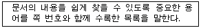
- 다단(Newspaper Column)
- 소트(Sort)
- 마진(Margin)
- 색인(Index)
(정답률: 56%)
14. 다음 중 워드프로세서의 용어에 대한 설명으로 옳지 않은 것은?
- 각주(Footnote) : 문서 내의 단어 또는 문장을 보충 설명하기 위해 해당 페이지 하단에 데이터를 기록해 놓은 것을 말한다.
- 미주(Endnote) : 1인치당 입력된 문자의 수를 의미하며, 문자와 문자 사이의 간격을 표시하는 단위이다.
- 두문(Header) : 여러 장의 문서를 만들 때 각 페이지 상단에 페이지 번호나 단원의 이름과 같이 반복적으로 표시되는 부분을 말한다.
- 데시멀 탭(Decimal Tab) : 미리 정의된 위치의 소수점을 중심으로 정렬시킨다.
(정답률: 71%)
15. 다음 중 워드 랩(Word Wrap)으로 생긴 공백을 조절하기 위해 문장의 양쪽 끝을 맞추는 작업을 무엇이라 하는가?
- 영문 균등(Justification)
- 옵션(Option)
- 다단 편집
- 마진(Margin)
(정답률: 74%)
16. 결재권자가 휴가, 출장 기타의 사유로 결재할 수 없는 때에 그 직무를 대리하는자가 결재하는 것은?
- 경규결재
- 대결
- 전결
- 후결
(정답률: 76%)
17. 문서를 체계적으로 관리하기 위해 일정한 기준에 따라 파일 형태로 보관ㆍ보존하는 방법을 무엇이라고 하는가?
- 파일링 시스템
- 상례문제도
- 캐비넷 시스템
- 홀더링 시스템
(정답률: 63%)
18. 다음 중 지시문서가 아닌 것은?
- 훈령
- 예규
- 일일명령
- 고시
(정답률: 75%)
19. 다음 교정 부호 중에서 원래 문장의 글자 수에 변동을 주지 않는 것은?
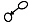
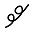
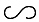
(정답률: 84%)
20. 다음은 (가)의 문장을 교정부호를 사용하여 (나)의 문장 형태로 정정한 것이다. 사용된 교정부호의 순서가 옳은 것은?
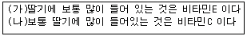
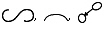
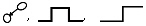
(정답률: 89%)
2과목: PC 운영 체제
21. 한글 Windows 98에서 창(Window)의 사용법에 대한 설명으로 옳지 않은 것은?
- 창의 제목표시줄을 드래그하면 창의 위치를 이동할 수 있다.
- 창의 제목표시줄을 더블클릭하면 창을 최대화하거나 원래 크기로 변경할 수 있다.
- 창의 제목표시줄을 오른쪽 마우스를 클릭하면 창 관리를 위한 바로가기 메뉴를 이용할 수 있다.
- 창의 제목표시줄을 마우스로 천천히 두 번 클릭하면 창의 제목을 바꿀 수 있다.
(정답률: 65%)
22. 한글 Windows 98에서는 아래의 그림과 같은 표시창을 이용하여 활성화된 창을 전환할 수 있다. 이러한 기능을 수행하기 위한 윈도우 바로가기 키는?
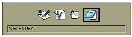
- [Alt] ＋ [Tab]
- [Ctrl] ＋ [Tab]
- [Shift] ＋ [Esc]
- [Alt] ＋ [X]
(정답률: 79%)
23. 다음 중 한글 Windows 98의 도움말에 대한 설명으로 옳지 않은 것은?
- 바탕화면에서 [시작] - [도움말]을 선택하여 실행한다.
- [목차] 탭에서 아이콘은 하위 항목이 표시되어 있음을 의미하며, 클릭하면 아이콘으로 변하면서 하위 항목을 숨겨준다.
- 도움말은 Hypertext 기능을 지원하지 않는다.
- 도움말 창에서 [색인] 검색 방법은 찾는 단어의 처음 몇 글자를 입력하면 유사 항목을 자동으로 찾아준다.
(정답률: 65%)
24. 다음은 한글 Windows 98의 어떤 기능을 설명하고 있는가?
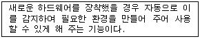
- OLE(Object Linked and Embedding)
- PNP(Plug and Play)
- PWS(Personal Web Sever)
- GUI(Graphic User Interface)
(정답률: 48%)
25. 다음 중 한글 Windows 98에서 마우스의 오른쪽 버튼을 눌렀을 때 나타나는 바로가기 메뉴에 관한 설명으로 옳은 것은?
- 작업표시줄에서는 바로가기 메뉴가 나타나지 않는다.
- 바로가기 메뉴의 내용은 절대로 변경할 수 없다.
- 바로가기 메뉴에는 부메뉴가 존재할 수 없다.
- 마우스 포인터가 위치한 영역에 따라서 바로가기 메뉴의 항목이 달라진다.
(정답률: 56%)
26. 한글 Windows 98의 [내 컴퓨터] 창에서 [보기] 메뉴의 [자세히]를 선택하였을 때 표시되는 정보가 아닌 것은?
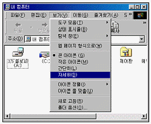
- 이름
- 종류
- 읽기 전용
- 디스크인 경우 전체크기
(정답률: 54%)
27. 다음 중 한글 Windows 98의 바탕화면에서 내용의 유무에 따라서 모양이 달라지는 아이콘은?
- 내 컴퓨터
- 네트워크 환경
- 휴지통
- 내 문서
(정답률: 76%)
28. 한글 Windows 98의 [제어판]에서 배경화면이나 화면보호기와 같은 바탕화면에 대한 설정을 변경하는 경우에 사용하는 도구는?
- 디스플레이
- 멀티미디어
- 시스템
- 내게 필요한 옵션
(정답률: 62%)
29. 한글 Windows 98에서 [시작] 메뉴의 [설정]-[제어판]-[마우스]를 선택하여 [마우스 등록정보] 창에서 설정할 수 없는 것은?
- 왼손잡이를 위한 마우스 단추 설정을 할 수 있다.
- 마우스 포인터의 모양을 변경할 수 있다.
- 마우스 포인터의 동작 속도를 변경할 수 있다.
- 마우스를 연결하는 포트를 바꿀 수 있다.
(정답률: 67%)
30. 다음 중 한글 Windows 98의 [제어판]-[프로그램 추가/제거]에서 수행할 수 있는 기능이 아닌 것은?
- 응용 프로그램의 설치
- Windows 구성 요소 제거
- 시동 디스크 작성
- 응용 프로그램 이동
(정답률: 48%)
31. 다음은 한글 Windows 98에서 임의의 폴더창을 보여주고 있다. 그림에서와 같이 해당 폴더내의 모든 파일이나 폴더를 전체 선택하기 위한 바로가기 키는 무엇인가?
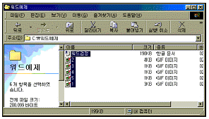
- [Ctrl]+[X]
- [Ctrl]+[A]
- [Ctrl]+[C]
- [Ctrl]+[V]
(정답률: 79%)
32. 다음 중 한글 Windows 98의 [휴지통]에 관한 설명으로 옳지 않은 것은?
- 삭제된 폴더를 복원하는 경우에는 해당 폴더내의 하위 폴더나 파일들도 복원될 수 있다.
- 플로피디스크에서 삭제한 파일은 일단 휴지통에 보관되고 나중에 복원시킬 수 있다.
- 파일 삭제시 휴지통에 보관하지 않고 즉시 제거하고자하는 경우에는 휴지통의 등록정보 창에서 설정할 수 있다.
- 휴지통의 등록정보 창에서 휴지통의 용량 조절 및 삭제 확인 대화상자 표시 유무 등을 설정할 수 있다.
(정답률: 55%)
33. 한글 Windows 98에서 동일한 창에서 폴더 열기가 선택되었다. 아래 그림과 같이 표시된 창에 대한 설명으로 옳지 않는 것은?
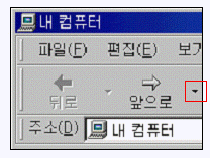
- 내 컴퓨터에 대한 창을 열어 놓은 것이다.
- 앞으로의 오른쪽 옆에 보이는 역삼각형을 클릭하면 맨처음 열었던 창으로 돌아온다.
- “앞으로”를 클릭하면 뒤로를 선택하기 바로 전의 창으로 이동한다.
- 하위 폴더를 열었다가 “뒤로” 버튼을 이용하여 그 전으로 돌아온 상태이다.
(정답률: 62%)
34. 한글 Windows 98에서 아래의 프린터 창에 대한 설명으로 가장 적절한 것은?
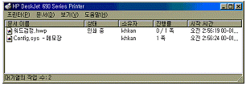
- 현재 1개의 문서가 대기중이며 1개의 문서가 인쇄되고 있다.
- '설치' 문서를 더블클릭하면 그 문서의 내용을 볼 수 있다.
- 프린터 창을 닫으면 모든 인쇄가 취소된다.
- 인쇄가 완료된 문서는 직접 삭제해 주어야 한다.
(정답률: 66%)
35. 한글 Windows 98의 [보조프로그램] 메뉴에 기본으로 포함되지 않은 응용 프로그램은?
- Internet Explorer
- 그림판
- 계산기
- 메모장
(정답률: 79%)
36. 한글 Windows 98의 탐색기 도구 버튼 중에서 [Delete]키와 같은 기능을 하는 것은?
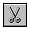
(정답률: 70%)
37. 한글 Windows 98에서 단편화를 제거하여 디스크 수행 속도를 향상시켜 주는 프로그램은 무엇인가?
- 오류검사
- 디스크 검사
- 백업
- 디스크 조각 모음
(정답률: 71%)
38. 한글 Windows 98의 [내 컴퓨터]에서 3.5인치 플로피디스크를 포맷할 때 제공되는 포맷 형식이 아닌 것은?
- 빠른 포맷
- 포맷 후 모든 프로그램을 복사
- 전체
- 시스템 파일만 복사
(정답률: 43%)
39. 한글 Windows 98에 ’CD 재생기’나 ’메모장’이 설치되어 있지 않은 경우에는 어떠한 항목을 이용하면 되는가?
- 시작 메뉴 - 등록정보
- 제어판 - 프로그램 추가/제거
- 탐색기 - 폴더 옵션
- 내 컴퓨터 - 등록정보
(정답률: 62%)
40. 한글 Windows 98에서 [제어판] 내의 [네트워크] 아이콘을 더블 클릭하였을 때 표시되는 설정 항목에 포함되지 않는 것은?
- 네트워크 구성
- 컴퓨터 확인
- 액세스 제어
- 공유 프린터
(정답률: 44%)
3과목: PC 기본 상식
41. 다음은 컴퓨터의 역사에 대한 설명이다. 괄호 안에 들어갈 가장 적합한 용어는?
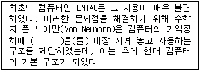
- 데이터(data)
- 하드웨어(hardware)
- 프로그램(program)
- 통신(communication) 기능
(정답률: 56%)
42. 이산적인 데이터만을 취급하며 기억 및 논리 연산 기능을 갖추고 있는 컴퓨터는?
- 디지털 컴퓨터
- 아날로그 컴퓨터
- 하이브리드 컴퓨터
- 파스칼의 치차식 계산기
(정답률: 50%)
43. 다음 중 보조기억장치에 대한 설명으로 옳지 않은 것은?
- RAM을 보조하기 위해 사용한다.
- 비휘발성의 특징을 가지고 있다.
- 반영구적으로 자료를 저장할 수 있다.
- 접근 속도가 느리므로 백업용으로 사용하기에는 적합하지 않다.
(정답률: 68%)
44. 다음 중 기억장치의 접근 시간을 빠른 것에서 느린 것으로 순서대로 나열한 것은?
- 캐시(Cache) → 레지스터(Register) → 주기억장치 → 디스크 → 테이프
- 레지스터(Register) → 캐시(Cache) → 주기억장치 → 디스크 → 테이프
- 캐시(Cache) → 주기억장치 → 레지스터(Register) → 디스크 → 테이프
- 레지스터(Register) → 주기억장치 → 캐시(Cache) → 디스크 → 테이프
(정답률: 68%)
45. 다음 중 컴퓨터 바이러스가 주는 피해가 아닌 것은?
- 운영체제의 파괴
- 프로그램의 실행 속도 저하
- CD-ROM에 저장된 데이터의 파괴
- 디스크에 저장된 파일의 파괴
(정답률: 50%)
46. 뉴스, 드라마, 영화, 게임 등의 멀티미디어 데이터베이스를 구축하여 사용자가 요구하는 미디어를 선택적으로 전송하는 양방향 멀티미디어 서비스를 무엇이라 하는가?
- VDT
- VOD
- VCS
- PACS
(정답률: 66%)
47. 다음 중 멀티미디어 재생을 위한 PC의 구성 요소로 가장 거리가 먼 것은?
- DVD-ROM 드라이브
- 그래픽카드
- 사운드카드
- 타블렛(Tablet)
(정답률: 66%)
48. 다음의 장치 중 컴퓨터의 입력 장치에 해당하지 않는 것은?
- 디지타이저(Digitizer)
- 플로터(Plotter)
- 스캐너(Scanner)
- 광학문자판독기(OCR)
(정답률: 63%)
49. 자주 사용하는 사이트의 자료를 하드디스크에 저장하고 있다가, 사용자가 다시 그 자료에 접근하면 네트워크를 통해서 다시 읽어 오지 않고 미리 저장한 하드디스크의 자료를 활용해서 다시 빠르게 보여주는 기능을 무엇이라 하는가?
- 쿠키(cookie)
- 캐싱(caching)
- 필터링(filtering)
- 푸싱(pushing)
(정답률: 59%)
50. TCP/IP 프로토콜에서 현재 사용하고 있는 주소체계인 IPv4(IP Version 4)는 몇 비트 주소체계인가?
- 32bit
- 64bit
- 128bit
- 256bit
(정답률: 60%)
51. 지적재산권이 있는 소프트웨어를 복사하여 판매하였을 경우, 어떤 법에 저촉되는가?
- 개인정보법
- 컴퓨터프로그램보호법
- 사생활침해방지법
- 통신비밀보호법
(정답률: 69%)
52. 다음 중 컴퓨터로 하여금 전자악기를 연주할 수 있고 전자악기가 가지고 있는 모든 기능들을 제어할 수 있는 기본적인 디지털 신호 체계를 위한 인터페이스는 무엇인가?
- FM
- PCM
- MIDI
- Wave Table
(정답률: 77%)
53. 데이터 통신망에서 사용하는 전송 속도의 단위 중 1초 동안 전송할 수 있는 비트의 수를 무엇이라 하는가?
- Cycle
- MIPS
- MHz
- bps
(정답률: 50%)
54. 다음 중 인터넷을 기반으로 웹페이지를 전송 받기 위해 사용되는 응용계층 프로토콜은?
- HTTP
- TCP
- IP
- UDP
(정답률: 55%)
55. 다음 중 정보화 사회의 부작용에 대한 대처방안으로 옳지 않은 것은?
- 정보기술의 독점권 인정
- 정보 이용 기회의 확대를 통한 정보 소외 현상 방지
- 지적 재산권에 대한 인식의 사회화
- 정보 윤리 의식을 고취시켜 컴퓨터 범죄를 예방
(정답률: 55%)
56. 기억 장치의 용량을 작은 단위에서 큰 단위의 순서로 올바르게 나열한 것은?
- KiloByte → MegaByte → TeraByte → GigaByte
- KiloByte → MegaByte → GigaByte → TeraByte
- KiloByte → GigaByte → MegaByte → TeraByte
- KiloByte → TeraByte → MegaByte → GigaByte
(정답률: 65%)
57. 기존 응용 프로그램의 오류 수정이나 성능 향상을 위해 프로그램의 일부 파일을 변경해 주는 프로그램을 무엇이라고 하는가?
- 패치 프로그램(Patch Program)
- 링킹 프로그램(Linking Program)
- 응용 프로그램(Application Program)
- 채팅 프로그램(Chatting Program)
(정답률: 65%)
58. 다음 중에서 파일 형식의 성격이 나머지와 다른 것은?
- avi
- mov
- mp3
- mpg
(정답률: 64%)
59. 컴퓨터 사용 중에 전원을 끄거나 다시 시작하지 않고 키보드, 마우스, 스캐너, 디지털 카메라 등을 바꾸어 사용하고 싶은 경우 어떤 방식의 기기로 업그레이드해야 하는가?
- PS/2
- SCSI
- USB
- Parallel Port
(정답률: 69%)
60. 다음 중에서 파일 확장자의 성격이 나머지와 다른 것은?
- ZIP
- ARJ
- HWP
- RAR
(정답률: 47%)